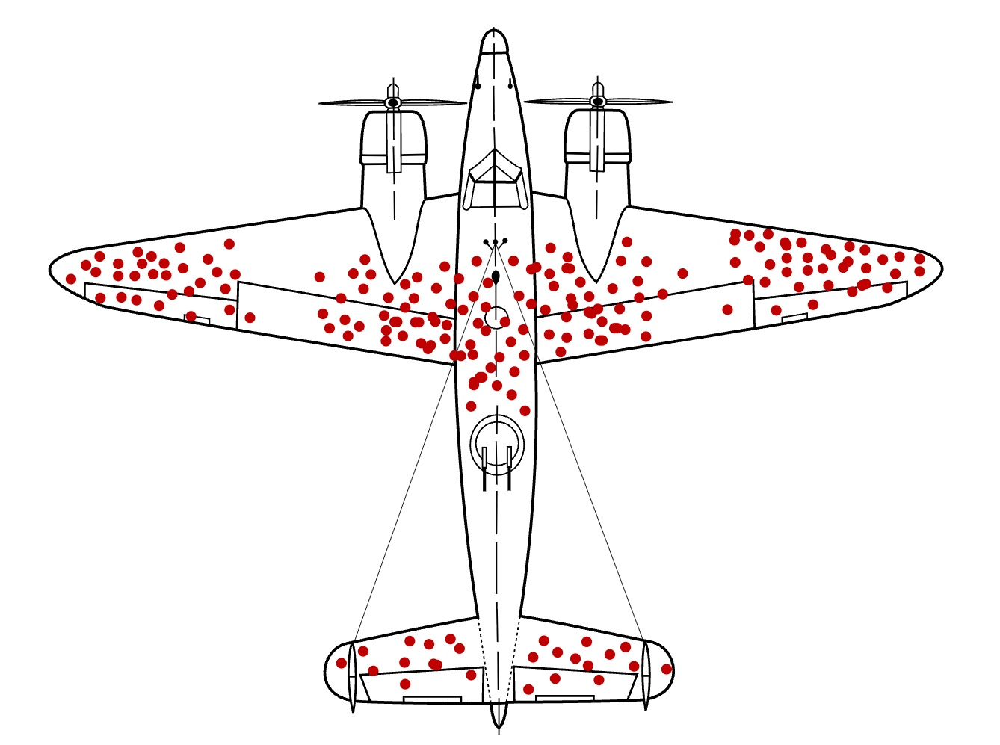

Zweiter Weltkrieg: Die US-Armee untersucht Bomber, die von ihrem Einsatz zurückkommen.
Jeder rote Punkt ist ein Einschussloch.
Panzerung ist schwer – ihr dürft nur wenige Stellen verstärken.
Zeigt auf die Stellen, die ihr verstärken würdet.